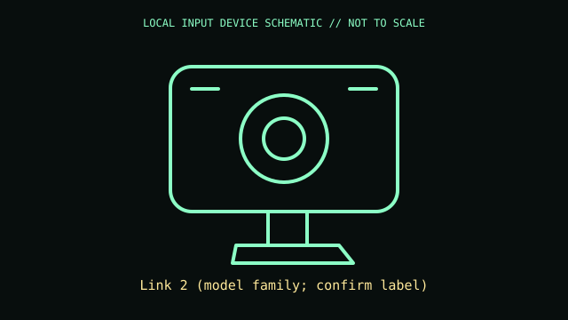

[ IMAGING AND AUDIO-CAPTURE PERIPHERALS // IDENTIFIED COMPONENT ]
Insta360 Link 2
AI-assisted 4K webcam on a two-axis gimbal for meetings and content capture.

MODEL IDENTIFICATION: Link 2 (model family; confirm label). Confirm the printed SKU, revision, bundle, region, and included accessories before repair or compatibility claims.
Model specifications
| Catalog leaf | Imaging and audio-capture peripherals |
|---|---|
| Exact model / identifier | Link 2 (model family; confirm label) |
| Mechanism and primary specifications | 4K UHD capture up to 30 fps; 1080p up to 60 fps under supported modes; USB-C; 2-axis gimbal; phase-detection autofocus; gesture/software camera controls. |
| Compatibility and interface caveats | Link 2 is distinct from Link 2C fixed webcam and original Link. AI framing, gesture control and 4K mode depend on Link Controller software, USB bandwidth, and host app. |
| Revision identification | Record the full label and software/firmware revision. Similar product-family names may use different protocols, components, connectors, or bundled accessories. |
Preservation and service
Store gimbal in its protective position; do not force axes by hand or obstruct lens. Clean lens with microfiber and disconnect before mounting changes.
Separate observed condition and test setup from vendor-published specifications; record host OS, driver/app version, cables, adapters, and accessories.
Primary manufacturer sources
- Insta360 Link 2 productManufacturer documentation; verify the exact SKU, revision, region, and accessories against the unit label.
- Insta360 Link 2 supportManufacturer documentation; verify the exact SKU, revision, region, and accessories against the unit label.
Manufacturer support pages can change; retain the applicable manual and its revision in the physical equipment record.